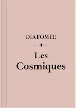

2025
Avril


Mars


Février

2024
Décembre


Juillet
-
31 —
 💖 La dernière allumette de Marie Vareille
💖 La dernière allumette de Marie Vareille
- 11 (édité) — 💖 Les Cosmiques de Diatomée
Juin


Avril
- 20 — À son image de Jérôme Ferrari
-
06 —
 À la lumière du petit matin d’Agnès Martin-Lugand
À la lumière du petit matin d’Agnès Martin-Lugand
-
06 —
 Gen-X de Diatomée
Gen-X de Diatomée
Janvier

2023
Novembre
-
19 —
 La nostalgie de l’Ange d’Alice Sebold
La nostalgie de l’Ange d’Alice Sebold
- 19 (édité) — 💖 Pour un garçon de Nick Hornby
-
04 —
Nouvelles de Diatomée
Entre l’ouvrant et le dormant de la porte, Délicieuse incertitude qui tisse la mesure, Recueil de courts textes
- 04 —  💖 Les Cosmiques de Diatomée
Octobre
Septembre
-
17 —
Des thrillers un peu trop hardcores
 Piège de soie (Julie Parsons), Le frère de sang (Éric Giacometti et Jacques Ravenne)
Piège de soie (Julie Parsons), Le frère de sang (Éric Giacometti et Jacques Ravenne) -
02 —
Le premier jour et La première nuit de Marc Levy

 Le premier jour, La première nuit (Marc Levy)
Le premier jour, La première nuit (Marc Levy)
Août


Juillet
- 16 — 💖 Pour un garçon de Nick Hornby
- 11 — Little Monsters de Kara Thomas
-
08 —
 No et moi de Delphine De Vigan
No et moi de Delphine De Vigan